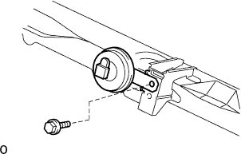

Remove Low Pitched Horn ASSY |
| 1. Remove the radiator grill |
Use the clip resover to remove the six clips.
 |
Paste the protective tape around and on the radiator support seal UPR and the radiator support seal UPR.
Use a flathead screwdriver with a protective tape to remove the support seal behind the vehicle with the three claws in the figure.

Lift the radiator support seal UPR and remove the radiator grilled claws from the gaps.

Check that the claws are off and remove the radiator grill.
Remove the radiator support seal UPR.
| 2. Remove the low pitched horn ASSY |
Cut the connector.
|  |
Remove the bolt and remove the low pit horn ASSY.